Note
Go to the end to download the full example code.
Structural Analysis of a Lathe Cutter#
Basic walk through PyMAPDL capabilities.
Objective#
The objective of this example is to highlight some regularly used PyMAPDL features via a lathe cutter finite element model. Lathe cutters have multiple avenues of wear and failure, and the analyses supporting their design would most often be transient thermal-structural. However, for simplicity, this simulation example uses a non-uniform load.
{kind=link}
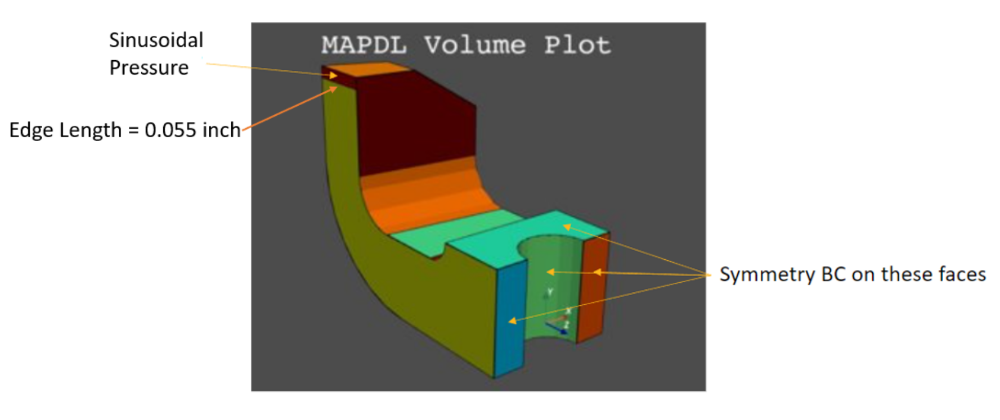
Figure 1: Lathe cutter geometry and load description.#
Contents#
Variables and launch Define necessary variables and launch MAPDL.
Geometry, mesh, and MAPDL parameters Import geometry and inspect for MAPDL parameters. Define linear elastic material model with Python variables. Mesh and apply symmetry boundary conditions.
Coordinate system and load Create a local coordinate system for the applied load and verify with a plot.
Pressure load Define the pressure load as a sine function of the length of the application area using numpy arrays. Import the pressure array into MAPDL as a table array. Verify the applied load and solve.
Plotting Show result plotting, plotting with selection, and working with the plot legend.
Postprocessing: List a result two ways: use PyMAPDL and the Pythonic version of APDL. Demonstrate extended methods and writing a list to a file.
Advanced plotting Use of
pyvista.UnstructuredGridfor additional postprocessing.
Step 1: Variables and launch#
Define variables and launch MAPDL.
Often used MAPDL command line options are exposed as Pythonic parameter names in
ansys.mapdl.core.launcher.launch_mapdl(). For example, -dir
has become run_location.
You could use run_location to specify the MAPDL run location. For example:
mapdl = launch_mapdl(run_location=path)
Otherwise, the MAPDL working directory is stored in mapdl.directory. In this
directory, MAPDL will create some of the images we will show later.
Options without a Pythonic version can be accessed by the additional_switches
parameter.
Here -smp is used only to keep the number of solver files to a minimum.
mapdl = launch_mapdl(additional_switches="-smp")
Step 2: Geometry, mesh, and MAPDL parameters#
Import geometry and inspect for MAPDL parameters.
Define material and mesh, and then create boundary conditions.
# First, reset the MAPDL database.
mapdl.clear()
Import the geometry file and list any MAPDL parameters.
lathe_cutter_geo = download_example_data("LatheCutter.anf", "geometry")
mapdl.input(lathe_cutter_geo)
mapdl.finish()
print(mapdl.parameters)
MAPDL Parameters
----------------
DMP : ""
PRESS_LENGTH : 0.055
UNIT_SYSTEM : "bin"
Use pressure area per length in the load definition.
pressure_length = mapdl.parameters["PRESS_LENGTH"]
print(mapdl.parameters)
MAPDL Parameters
----------------
DMP : ""
PRESS_LENGTH : 0.055
UNIT_SYSTEM : "bin"
Change the units and title.
mapdl.units("Bin")
mapdl.title("Lathe Cutter")
TITLE=
Lathe Cutter
Set material properties.
MATERIAL 1 NUXY = 0.2700000
The MAPDL element type SOLID285 is used for demonstration purposes.
Consider using an appropriate element type or mesh density for your actual
application.
mapdl.et(1, 285)
mapdl.smrtsize(4)
mapdl.aesize(14, 0.0025)
mapdl.vmesh(1)
mapdl.da(11, "symm")
mapdl.da(16, "symm")
mapdl.da(9, "symm")
mapdl.da(10, "symm")
CONSTRAINT AT AREA 10
LOAD LABEL = SYMM
Step 3: Coordinate system and load#
Create a local Coordinate System (CS) for the applied pressure as a function of local X.
Local CS ID is 11
mapdl.cskp(11, 0, 2, 1, 13)
mapdl.csys(1)
mapdl.view(1, -1, 1, 1)
mapdl.psymb("CS", 1)
mapdl.vplot(
color_areas=True,
show_lines=True,
cpos=[-1, 1, 1],
smooth_shading=True,
)
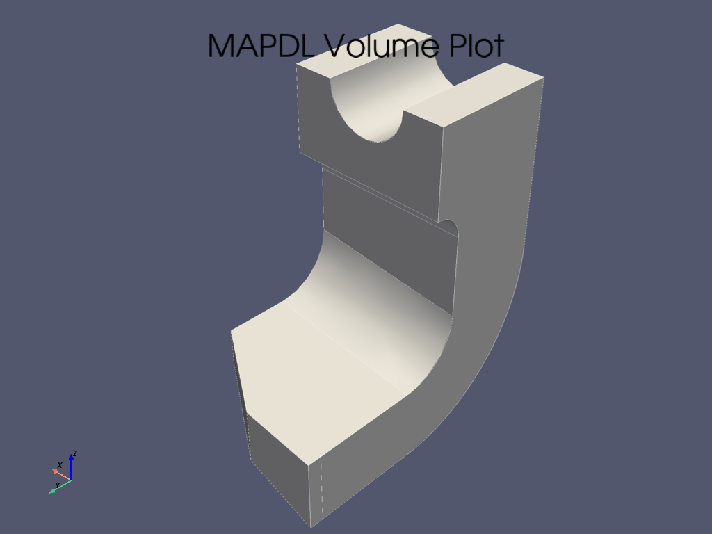
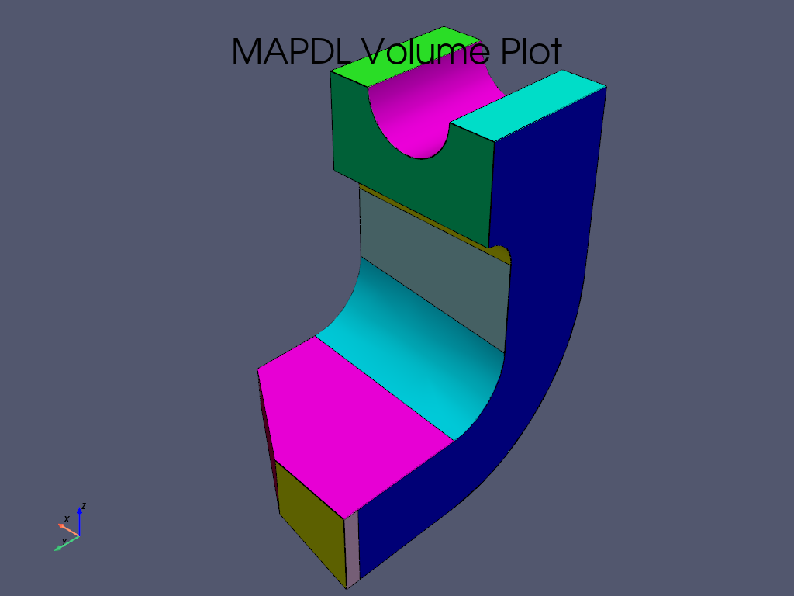
VTK plots do not show MAPDL plot symbols.
However, to use MAPDL plotting capabilities, you can set the keyword
option vtk to False.
mapdl.lplot(vtk=False)
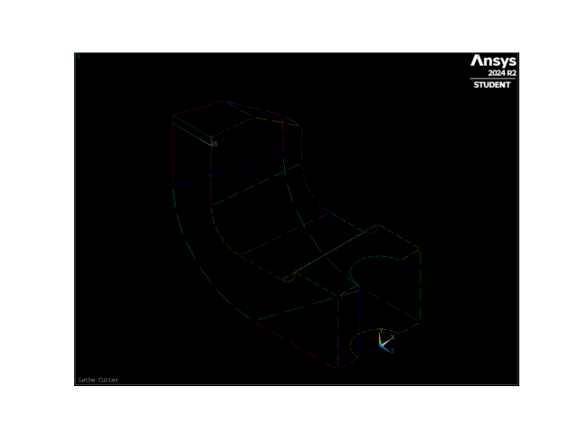
Step 4: Pressure load#
Create a pressure load, load it into MAPDL as a table array, verify the load, and solve.
length_x and press are vectors. To combine them into the correct
form needed to define the MAPDL table array, you can use
numpy.stack.
SELECT ALL ENTITIES OF TYPE= ALL AND BELOW
You can open the MAPDL GUI to check the model.
mapdl.open_gui()
Set up the solution.
mapdl.finish()
mapdl.slashsolu()
mapdl.nlgeom("On")
mapdl.psf("PRES", "NORM", 3, 0, 1)
mapdl.view(1, -1, 1, 1)
mapdl.eplot(vtk=False)
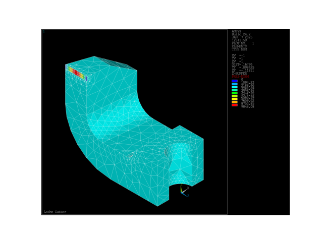
Solve the model.
mapdl.solve()
mapdl.finish()
if mapdl.solution.converged:
print("The solution has converged.")
The solution has converged.
Step 5: Plotting#
mapdl.post1()
mapdl.set("last")
mapdl.allsel()
mapdl.post_processing.plot_nodal_principal_stress("1", smooth_shading=False)
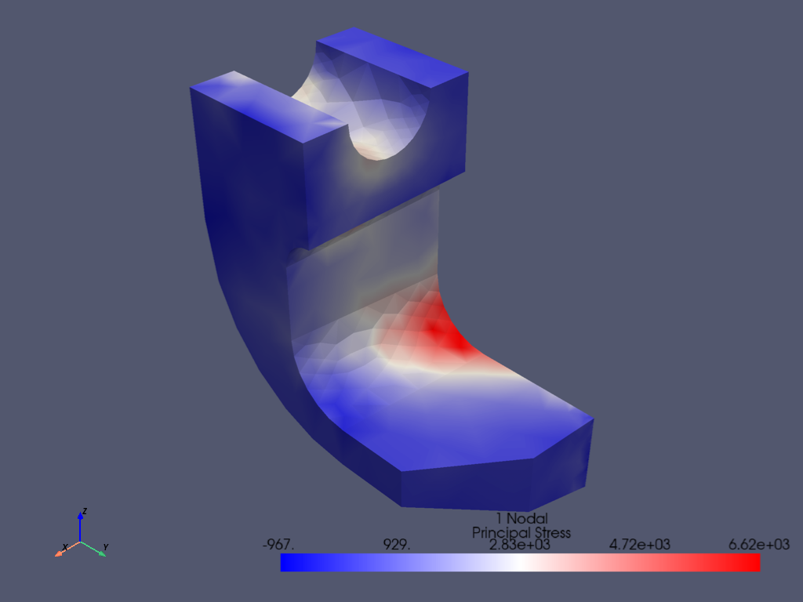
Plotting - Part of Model#
mapdl.csys(1)
mapdl.nsel("S", "LOC", "Z", -0.5, -0.141)
mapdl.esln()
mapdl.nsle()
mapdl.post_processing.plot_nodal_principal_stress(
"1", edge_color="white", show_edges=True
)
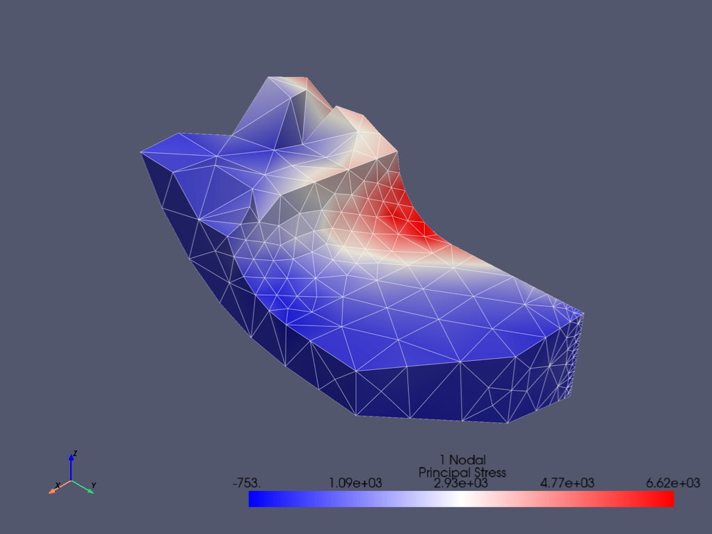
Plotting - Legend Options#
mapdl.allsel()
sbar_kwargs = {
"color": "black",
"title": "1st Principal Stress (psi)",
"vertical": False,
"n_labels": 6,
}
mapdl.post_processing.plot_nodal_principal_stress(
"1",
cpos="xy",
background="white",
edge_color="black",
show_edges=True,
scalar_bar_args=sbar_kwargs,
n_colors=9,
)
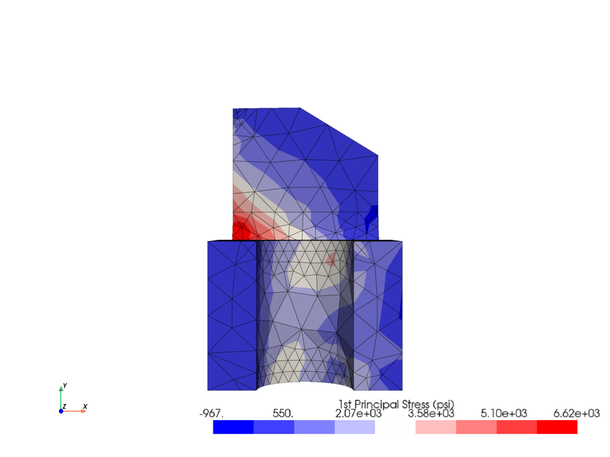
Let’s try out some scalar bar options from the PyVista documentation. For example, let’s set black text on a beige background.
The scalar bar keywords defined as a Python dictionary are an alternate method to using {key:value}’s. You can use the click-and drag method to reposition the scalar bar. Left-click it and hold down the left mouse button while moving the mouse.
sbar_kwargs = dict(
title_font_size=20,
label_font_size=16,
shadow=True,
n_labels=9,
italic=True,
bold=True,
fmt="%.1f",
font_family="arial",
title="1st Principal Stress (psi)",
color="black",
)
mapdl.post_processing.plot_nodal_principal_stress(
"1",
cpos="xy",
edge_color="black",
background="beige",
show_edges=True,
scalar_bar_args=sbar_kwargs,
n_colors=256,
cmap="jet",
)
# cmap names *_r usually reverses values. Try cmap='jet_r'
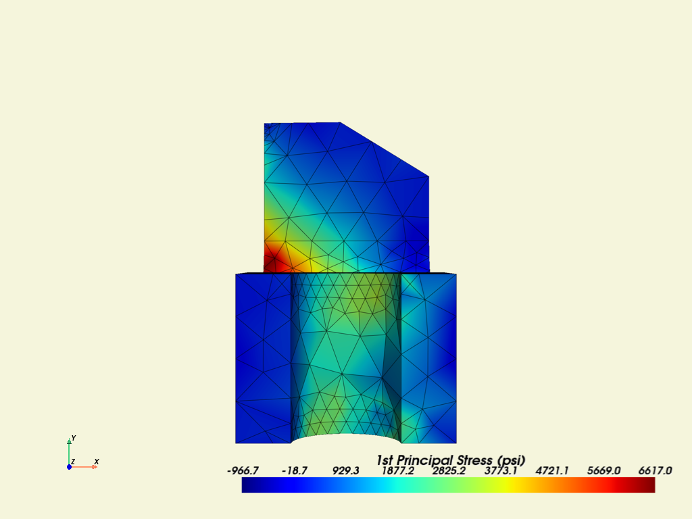
Step 6: Postprocessing#
Results List#
Get all principal nodal stresses.
mapdl.post_processing.nodal_principal_stress("1")
array([ 887.53948311, 1288.58259737, 229.12863096, ..., 855.96810266,
2285.54348104, 1614.97139698], shape=(1243,))
Get the principal nodal stresses of the node subset.
mapdl.nsel("S", vmin=1200, vmax=1210)
mapdl.esln()
mapdl.nsle()
print("The node numbers are:")
print(mapdl.mesh.nnum) # get node numbers
print("The principal nodal stresses are:")
mapdl.post_processing.nodal_principal_stress("1")
The node numbers are:
[ 184 185 186 326 332 336 346 347 348 349 357 358 359 360
361 366 368 369 370 376 381 382 385 392 393 394 395 396
397 779 780 891 892 893 894 969 970 971 973 974 975 976
979 992 993 1002 1003 1010 1011 1013 1030 1031 1060 1083 1084 1111
1113 1115 1116 1117 1119 1152 1157 1161 1163 1179 1182 1191 1195 1196
1200 1201 1202 1203 1204 1205 1206 1207 1208 1209 1210 1211 1213 1214
1222 1224 1225 1228 1229 1231 1233 1234 1235 1238 1239 1240 1242]
The principal nodal stresses are:
array([2657.37560975, 2199.92110418, 2031.93530652, 1967.70828092,
1929.31411256, 2557.03672855, 1983.75538004, 2978.09117685,
2577.80722207, 1999.3067353 , 1981.6816549 , 2994.4659789 ,
3181.29206113, 2150.11514007, 1581.86327238, 2093.24097911,
2534.58551933, 1998.32242897, 1493.85658084, 2175.15574789,
2281.95183316, 1791.55814526, 2924.60094659, 2784.67800905,
2724.95509346, 2049.05388449, 2929.03999388, 2928.08125247,
2818.85447784, 2136.07869 , 1942.80152533, 1581.33058849,
1495.85599243, 1604.97477647, 2041.3430778 , 1976.05997671,
1914.45871679, 2167.60333527, 1687.59208139, 1677.98339784,
1592.09502535, 1624.78720227, 1570.11308717, 1539.60460303,
1582.00596324, 1345.54016792, 1489.42855398, 1710.90266775,
1712.59705453, 1488.89176357, 1595.69075559, 1620.03252476,
1551.1257534 , 1364.89099284, 1519.67822337, 1995.44065207,
1929.0706437 , 2142.79570232, 1792.2967255 , 1744.6157808 ,
1505.21656909, 1890.80844256, 1699.06909213, 1862.47369574,
1794.75879886, 2037.59274059, 1335.90030641, 1543.58233473,
1515.15226733, 1535.96898677, 2171.6289332 , 1728.39876279,
1780.57448682, 2379.70803018, 1809.85588767, 1602.37545759,
1892.63730217, 2273.5551964 , 1553.1905515 , 1726.50414976,
1667.75204821, 1711.30553588, 1563.3225931 , 1764.9396505 ,
2009.24676917, 2384.24248841, 1676.37174787, 1747.60949784,
2071.42221582, 1573.25394918, 1861.79985674, 2116.76005325,
1586.62444609, 2338.8774132 , 2238.65926408, 2177.04549497,
2187.3531445 ])
Results as lists, arrays, and DataFrames#
Using mapdl.prnsol() to check
print(mapdl.prnsol("S", "PRIN"))
PRINT S NODAL SOLUTION PER NODE
*** MAPDL - ENGINEERING ANALYSIS SYSTEM RELEASE 24.2 ***
Ansys Mechanical Enterprise Academic Student
01055371 VERSION=LINUX x64 12:42:15 JAN 07, 2025 CP= 31.639
Lathe Cutter
***** POST1 NODAL STRESS LISTING *****
LOAD STEP= 1 SUBSTEP= 1
TIME= 1.0000 LOAD CASE= 0
NODE S1 S2 S3 SINT SEQV
184 2657.4 104.13 -1710.5 4367.9 3800.7
185 2199.9 119.45 -1179.7 3379.6 2952.8
186 2031.9 87.415 -958.24 2990.2 2628.3
326 1967.7 129.86 -595.45 2563.2 2288.4
332 1929.3 89.608 -874.20 2803.5 2467.1
336 2557.0 58.236 -2060.1 4617.1 4003.0
346 1983.8 131.01 -846.32 2830.1 2489.7
347 2978.1 130.33 -2168.4 5146.5 4465.4
348 2577.8 61.414 -2072.2 4650.1 4031.6
349 1999.3 75.784 -1998.3 3997.6 3462.8
357 1981.7 109.67 -1060.4 3042.1 2657.8
358 2994.5 295.76 -1917.8 4912.2 4261.0
359 3181.3 211.89 -2236.5 5417.8 4699.2
360 2150.1 111.89 -1943.8 4094.0 3545.5
361 1581.9 52.906 -2005.9 3587.7 3118.3
366 2093.2 254.94 -986.09 3079.3 2683.4
368 2534.6 131.91 -1853.4 4388.0 3805.9
369 1998.3 -17.969 -2081.5 4079.8 3533.3
370 1493.9 -60.219 -2060.7 3554.5 3086.4
376 2175.2 147.12 -982.63 3157.8 2771.4
381 2282.0 -42.882 -1607.4 3889.3 3389.6
382 1791.6 9.0671 -2075.0 3866.6 3351.9
385 2924.6 108.89 -1555.7 4480.3 3922.5
392 2784.7 269.58 -1483.7 4268.4 3716.1
393 2725.0 121.29 -1960.0 4685.0 4065.7
394 2049.1 65.728 -1795.2 3844.2 3329.7
395 2929.0 123.41 -1660.5 4589.6 4007.4
396 2928.1 43.331 -1673.0 4601.1 4027.3
397 2818.9 160.02 -1833.3 4652.2 4042.6
779 2136.1 150.14 -1342.2 3478.2 3022.3
780 1942.8 164.40 -1009.9 2952.7 2574.9
891 1581.3 -73.395 -1924.0 3505.3 3037.2
892 1495.9 -67.436 -1822.7 3318.5 2875.5
893 1605.0 14.399 -1837.8 3442.8 2984.4
894 2041.3 55.679 -1950.3 3991.6 3456.9
969 1976.1 56.642 -1116.4 3092.5 2704.0
970 1914.5 132.92 -877.49 2792.0 2448.5
971 2167.6 383.19 -1387.4 3555.1 3078.8
973 1687.6 -146.09 -1485.9 3173.5 2759.4
*** MAPDL - ENGINEERING ANALYSIS SYSTEM RELEASE 24.2 ***
Ansys Mechanical Enterprise Academic Student
01055371 VERSION=LINUX x64 12:42:15 JAN 07, 2025 CP= 31.640
Lathe Cutter
***** POST1 NODAL STRESS LISTING *****
LOAD STEP= 1 SUBSTEP= 1
TIME= 1.0000 LOAD CASE= 0
NODE S1 S2 S3 SINT SEQV
974 1678.0 -64.527 -1295.4 2973.4 2587.7
975 1592.1 -104.87 -1497.9 3090.0 2680.4
976 1624.8 -84.077 -1435.9 3060.6 2656.6
979 1570.1 -178.23 -1608.5 3178.6 2757.3
992 1539.6 137.20 -735.60 2275.2 1988.1
993 1582.0 157.76 -542.43 2124.4 1875.1
1002 1345.5 -50.322 -1061.8 2407.4 2093.7
1003 1489.4 97.664 -717.15 2206.6 1932.6
1010 1710.9 114.95 -848.69 2559.6 2239.1
1011 1712.6 9.1008 -1068.8 2781.4 2429.0
1013 1488.9 -3.5241 -999.06 2487.9 2168.9
1030 1595.7 -214.85 -1780.2 3375.9 2926.1
1031 1620.0 -61.545 -1864.6 3484.6 3018.4
1060 1551.1 -193.93 -1596.4 3147.6 2731.2
1083 1364.9 -145.29 -1857.7 3222.6 2792.7
1084 1519.7 -82.636 -1770.8 3290.5 2849.9
1111 1995.4 74.004 -1974.3 3969.8 3438.5
1113 1929.1 -37.655 -1702.9 3632.0 3149.0
1115 2142.8 129.18 -1497.3 3640.1 3158.4
1116 1792.3 134.01 -1126.2 2918.5 2535.3
1117 1744.6 39.536 -1448.5 3193.1 2767.4
1119 1505.2 -194.66 -1735.8 3241.0 2807.9
1152 1890.8 286.00 -417.11 2307.9 2048.9
1157 1699.1 100.64 -1010.2 2709.3 2358.9
1161 1862.5 2.4250 -1554.5 3417.0 2963.1
1163 1794.8 187.75 -1412.9 3207.7 2777.9
1179 2037.6 76.527 -2087.0 4124.6 3573.5
1182 1335.9 -81.999 -1892.8 3228.7 2803.0
1191 1543.6 194.10 -444.00 1987.6 1757.7
1195 1515.2 -153.96 -1900.6 3415.7 2958.4
1196 1536.0 79.011 -521.97 2057.9 1832.9
1200 2171.6 27.617 -1585.2 3756.8 3264.3
1201 1728.4 73.642 -713.14 2441.5 2158.5
1202 1780.6 129.37 -864.45 2645.0 2314.1
1203 2379.7 27.127 -2138.9 4518.6 3914.3
1204 1809.9 -30.076 -1975.7 3785.5 3278.8
1205 1602.4 24.994 -1027.1 2629.5 2292.3
1206 1892.6 -25.168 -1870.6 3763.2 3259.2
1207 2273.6 91.723 -1686.1 3959.7 3435.1
*** MAPDL - ENGINEERING ANALYSIS SYSTEM RELEASE 24.2 ***
Ansys Mechanical Enterprise Academic Student
01055371 VERSION=LINUX x64 12:42:15 JAN 07, 2025 CP= 31.640
Lathe Cutter
***** POST1 NODAL STRESS LISTING *****
LOAD STEP= 1 SUBSTEP= 1
TIME= 1.0000 LOAD CASE= 0
NODE S1 S2 S3 SINT SEQV
1208 1553.2 -45.381 -1839.9 3393.1 2940.1
1209 1726.5 -125.53 -1706.7 3433.2 2976.3
1210 1667.8 -117.97 -1565.8 3233.6 2805.5
1211 1711.3 -21.493 -1838.7 3550.0 3074.7
1213 1563.3 -43.132 -715.62 2278.9 2028.1
1214 1764.9 6.8066 -1644.5 3409.5 2953.2
1222 2009.2 122.10 -1353.9 3363.1 2919.8
1224 2384.2 198.64 -2031.8 4416.1 3824.5
1225 1676.4 -19.065 -1865.6 3542.0 3068.4
1228 1747.6 158.26 -628.54 2376.2 2096.6
1229 2071.4 65.592 -1706.8 3778.2 3274.1
1231 1573.3 -197.22 -1702.0 3275.3 2839.6
1233 1861.8 -92.373 -1832.7 3694.5 3201.3
1234 2116.8 28.452 -1948.1 4064.9 3520.8
1235 1586.6 -183.65 -1739.7 3326.3 2882.6
1238 2338.9 134.21 -1974.6 4313.5 3735.9
1239 2238.7 87.313 -1802.0 4040.6 3501.8
1240 2177.0 141.77 -1624.6 3801.7 3295.1
1242 2187.4 103.31 -1745.2 3932.6 3407.8
MINIMUM VALUES
NODE 1182 1030 359 1191 1191
VALUE 1335.9 -214.85 -2236.5 1987.6 1757.7
MAXIMUM VALUES
NODE 359 971 1152 359 359
VALUE 3181.3 383.19 -417.11 5417.8 4699.2
Use this command to obtain the data as a list.
mapdl_s_1_list = mapdl.prnsol("S", "PRIN").to_list()
print(mapdl_s_1_list)
[[184.0, 2657.4, 104.13, -1710.5, 4367.9, 3800.7], [185.0, 2199.9, 119.45, -1179.7, 3379.6, 2952.8], [186.0, 2031.9, 87.415, -958.24, 2990.2, 2628.3], [326.0, 1967.7, 129.86, -595.45, 2563.2, 2288.4], [332.0, 1929.3, 89.608, -874.2, 2803.5, 2467.1], [336.0, 2557.0, 58.236, -2060.1, 4617.1, 4003.0], [346.0, 1983.8, 131.01, -846.32, 2830.1, 2489.7], [347.0, 2978.1, 130.33, -2168.4, 5146.5, 4465.4], [348.0, 2577.8, 61.414, -2072.2, 4650.1, 4031.6], [349.0, 1999.3, 75.784, -1998.3, 3997.6, 3462.8], [357.0, 1981.7, 109.67, -1060.4, 3042.1, 2657.8], [358.0, 2994.5, 295.76, -1917.8, 4912.2, 4261.0], [359.0, 3181.3, 211.89, -2236.5, 5417.8, 4699.2], [360.0, 2150.1, 111.89, -1943.8, 4094.0, 3545.5], [361.0, 1581.9, 52.906, -2005.9, 3587.7, 3118.3], [366.0, 2093.2, 254.94, -986.09, 3079.3, 2683.4], [368.0, 2534.6, 131.91, -1853.4, 4388.0, 3805.9], [369.0, 1998.3, -17.969, -2081.5, 4079.8, 3533.3], [370.0, 1493.9, -60.219, -2060.7, 3554.5, 3086.4], [376.0, 2175.2, 147.12, -982.63, 3157.8, 2771.4], [381.0, 2282.0, -42.882, -1607.4, 3889.3, 3389.6], [382.0, 1791.6, 9.0671, -2075.0, 3866.6, 3351.9], [385.0, 2924.6, 108.89, -1555.7, 4480.3, 3922.5], [392.0, 2784.7, 269.58, -1483.7, 4268.4, 3716.1], [393.0, 2725.0, 121.29, -1960.0, 4685.0, 4065.7], [394.0, 2049.1, 65.728, -1795.2, 3844.2, 3329.7], [395.0, 2929.0, 123.41, -1660.5, 4589.6, 4007.4], [396.0, 2928.1, 43.331, -1673.0, 4601.1, 4027.3], [397.0, 2818.9, 160.02, -1833.3, 4652.2, 4042.6], [779.0, 2136.1, 150.14, -1342.2, 3478.2, 3022.3], [780.0, 1942.8, 164.4, -1009.9, 2952.7, 2574.9], [891.0, 1581.3, -73.395, -1924.0, 3505.3, 3037.2], [892.0, 1495.9, -67.436, -1822.7, 3318.5, 2875.5], [893.0, 1605.0, 14.399, -1837.8, 3442.8, 2984.4], [894.0, 2041.3, 55.679, -1950.3, 3991.6, 3456.9], [969.0, 1976.1, 56.642, -1116.4, 3092.5, 2704.0], [970.0, 1914.5, 132.92, -877.49, 2792.0, 2448.5], [971.0, 2167.6, 383.19, -1387.4, 3555.1, 3078.8], [973.0, 1687.6, -146.09, -1485.9, 3173.5, 2759.4], [974.0, 1678.0, -64.527, -1295.4, 2973.4, 2587.7], [975.0, 1592.1, -104.87, -1497.9, 3090.0, 2680.4], [976.0, 1624.8, -84.077, -1435.9, 3060.6, 2656.6], [979.0, 1570.1, -178.23, -1608.5, 3178.6, 2757.3], [992.0, 1539.6, 137.2, -735.6, 2275.2, 1988.1], [993.0, 1582.0, 157.76, -542.43, 2124.4, 1875.1], [1002.0, 1345.5, -50.322, -1061.8, 2407.4, 2093.7], [1003.0, 1489.4, 97.664, -717.15, 2206.6, 1932.6], [1010.0, 1710.9, 114.95, -848.69, 2559.6, 2239.1], [1011.0, 1712.6, 9.1008, -1068.8, 2781.4, 2429.0], [1013.0, 1488.9, -3.5241, -999.06, 2487.9, 2168.9], [1030.0, 1595.7, -214.85, -1780.2, 3375.9, 2926.1], [1031.0, 1620.0, -61.545, -1864.6, 3484.6, 3018.4], [1060.0, 1551.1, -193.93, -1596.4, 3147.6, 2731.2], [1083.0, 1364.9, -145.29, -1857.7, 3222.6, 2792.7], [1084.0, 1519.7, -82.636, -1770.8, 3290.5, 2849.9], [1111.0, 1995.4, 74.004, -1974.3, 3969.8, 3438.5], [1113.0, 1929.1, -37.655, -1702.9, 3632.0, 3149.0], [1115.0, 2142.8, 129.18, -1497.3, 3640.1, 3158.4], [1116.0, 1792.3, 134.01, -1126.2, 2918.5, 2535.3], [1117.0, 1744.6, 39.536, -1448.5, 3193.1, 2767.4], [1119.0, 1505.2, -194.66, -1735.8, 3241.0, 2807.9], [1152.0, 1890.8, 286.0, -417.11, 2307.9, 2048.9], [1157.0, 1699.1, 100.64, -1010.2, 2709.3, 2358.9], [1161.0, 1862.5, 2.425, -1554.5, 3417.0, 2963.1], [1163.0, 1794.8, 187.75, -1412.9, 3207.7, 2777.9], [1179.0, 2037.6, 76.527, -2087.0, 4124.6, 3573.5], [1182.0, 1335.9, -81.999, -1892.8, 3228.7, 2803.0], [1191.0, 1543.6, 194.1, -444.0, 1987.6, 1757.7], [1195.0, 1515.2, -153.96, -1900.6, 3415.7, 2958.4], [1196.0, 1536.0, 79.011, -521.97, 2057.9, 1832.9], [1200.0, 2171.6, 27.617, -1585.2, 3756.8, 3264.3], [1201.0, 1728.4, 73.642, -713.14, 2441.5, 2158.5], [1202.0, 1780.6, 129.37, -864.45, 2645.0, 2314.1], [1203.0, 2379.7, 27.127, -2138.9, 4518.6, 3914.3], [1204.0, 1809.9, -30.076, -1975.7, 3785.5, 3278.8], [1205.0, 1602.4, 24.994, -1027.1, 2629.5, 2292.3], [1206.0, 1892.6, -25.168, -1870.6, 3763.2, 3259.2], [1207.0, 2273.6, 91.723, -1686.1, 3959.7, 3435.1], [1208.0, 1553.2, -45.381, -1839.9, 3393.1, 2940.1], [1209.0, 1726.5, -125.53, -1706.7, 3433.2, 2976.3], [1210.0, 1667.8, -117.97, -1565.8, 3233.6, 2805.5], [1211.0, 1711.3, -21.493, -1838.7, 3550.0, 3074.7], [1213.0, 1563.3, -43.132, -715.62, 2278.9, 2028.1], [1214.0, 1764.9, 6.8066, -1644.5, 3409.5, 2953.2], [1222.0, 2009.2, 122.1, -1353.9, 3363.1, 2919.8], [1224.0, 2384.2, 198.64, -2031.8, 4416.1, 3824.5], [1225.0, 1676.4, -19.065, -1865.6, 3542.0, 3068.4], [1228.0, 1747.6, 158.26, -628.54, 2376.2, 2096.6], [1229.0, 2071.4, 65.592, -1706.8, 3778.2, 3274.1], [1231.0, 1573.3, -197.22, -1702.0, 3275.3, 2839.6], [1233.0, 1861.8, -92.373, -1832.7, 3694.5, 3201.3], [1234.0, 2116.8, 28.452, -1948.1, 4064.9, 3520.8], [1235.0, 1586.6, -183.65, -1739.7, 3326.3, 2882.6], [1238.0, 2338.9, 134.21, -1974.6, 4313.5, 3735.9], [1239.0, 2238.7, 87.313, -1802.0, 4040.6, 3501.8], [1240.0, 2177.0, 141.77, -1624.6, 3801.7, 3295.1], [1242.0, 2187.4, 103.31, -1745.2, 3932.6, 3407.8]]
Use this command to obtain the data as an array:
mapdl_s_1_array = mapdl.prnsol("S", "PRIN").to_array()
print(mapdl_s_1_array)
[[ 1.8400e+02 2.6574e+03 1.0413e+02 -1.7105e+03 4.3679e+03 3.8007e+03]
[ 1.8500e+02 2.1999e+03 1.1945e+02 -1.1797e+03 3.3796e+03 2.9528e+03]
[ 1.8600e+02 2.0319e+03 8.7415e+01 -9.5824e+02 2.9902e+03 2.6283e+03]
[ 3.2600e+02 1.9677e+03 1.2986e+02 -5.9545e+02 2.5632e+03 2.2884e+03]
[ 3.3200e+02 1.9293e+03 8.9608e+01 -8.7420e+02 2.8035e+03 2.4671e+03]
[ 3.3600e+02 2.5570e+03 5.8236e+01 -2.0601e+03 4.6171e+03 4.0030e+03]
[ 3.4600e+02 1.9838e+03 1.3101e+02 -8.4632e+02 2.8301e+03 2.4897e+03]
[ 3.4700e+02 2.9781e+03 1.3033e+02 -2.1684e+03 5.1465e+03 4.4654e+03]
[ 3.4800e+02 2.5778e+03 6.1414e+01 -2.0722e+03 4.6501e+03 4.0316e+03]
[ 3.4900e+02 1.9993e+03 7.5784e+01 -1.9983e+03 3.9976e+03 3.4628e+03]
[ 3.5700e+02 1.9817e+03 1.0967e+02 -1.0604e+03 3.0421e+03 2.6578e+03]
[ 3.5800e+02 2.9945e+03 2.9576e+02 -1.9178e+03 4.9122e+03 4.2610e+03]
[ 3.5900e+02 3.1813e+03 2.1189e+02 -2.2365e+03 5.4178e+03 4.6992e+03]
[ 3.6000e+02 2.1501e+03 1.1189e+02 -1.9438e+03 4.0940e+03 3.5455e+03]
[ 3.6100e+02 1.5819e+03 5.2906e+01 -2.0059e+03 3.5877e+03 3.1183e+03]
[ 3.6600e+02 2.0932e+03 2.5494e+02 -9.8609e+02 3.0793e+03 2.6834e+03]
[ 3.6800e+02 2.5346e+03 1.3191e+02 -1.8534e+03 4.3880e+03 3.8059e+03]
[ 3.6900e+02 1.9983e+03 -1.7969e+01 -2.0815e+03 4.0798e+03 3.5333e+03]
[ 3.7000e+02 1.4939e+03 -6.0219e+01 -2.0607e+03 3.5545e+03 3.0864e+03]
[ 3.7600e+02 2.1752e+03 1.4712e+02 -9.8263e+02 3.1578e+03 2.7714e+03]
[ 3.8100e+02 2.2820e+03 -4.2882e+01 -1.6074e+03 3.8893e+03 3.3896e+03]
[ 3.8200e+02 1.7916e+03 9.0671e+00 -2.0750e+03 3.8666e+03 3.3519e+03]
[ 3.8500e+02 2.9246e+03 1.0889e+02 -1.5557e+03 4.4803e+03 3.9225e+03]
[ 3.9200e+02 2.7847e+03 2.6958e+02 -1.4837e+03 4.2684e+03 3.7161e+03]
[ 3.9300e+02 2.7250e+03 1.2129e+02 -1.9600e+03 4.6850e+03 4.0657e+03]
[ 3.9400e+02 2.0491e+03 6.5728e+01 -1.7952e+03 3.8442e+03 3.3297e+03]
[ 3.9500e+02 2.9290e+03 1.2341e+02 -1.6605e+03 4.5896e+03 4.0074e+03]
[ 3.9600e+02 2.9281e+03 4.3331e+01 -1.6730e+03 4.6011e+03 4.0273e+03]
[ 3.9700e+02 2.8189e+03 1.6002e+02 -1.8333e+03 4.6522e+03 4.0426e+03]
[ 7.7900e+02 2.1361e+03 1.5014e+02 -1.3422e+03 3.4782e+03 3.0223e+03]
[ 7.8000e+02 1.9428e+03 1.6440e+02 -1.0099e+03 2.9527e+03 2.5749e+03]
[ 8.9100e+02 1.5813e+03 -7.3395e+01 -1.9240e+03 3.5053e+03 3.0372e+03]
[ 8.9200e+02 1.4959e+03 -6.7436e+01 -1.8227e+03 3.3185e+03 2.8755e+03]
[ 8.9300e+02 1.6050e+03 1.4399e+01 -1.8378e+03 3.4428e+03 2.9844e+03]
[ 8.9400e+02 2.0413e+03 5.5679e+01 -1.9503e+03 3.9916e+03 3.4569e+03]
[ 9.6900e+02 1.9761e+03 5.6642e+01 -1.1164e+03 3.0925e+03 2.7040e+03]
[ 9.7000e+02 1.9145e+03 1.3292e+02 -8.7749e+02 2.7920e+03 2.4485e+03]
[ 9.7100e+02 2.1676e+03 3.8319e+02 -1.3874e+03 3.5551e+03 3.0788e+03]
[ 9.7300e+02 1.6876e+03 -1.4609e+02 -1.4859e+03 3.1735e+03 2.7594e+03]
[ 9.7400e+02 1.6780e+03 -6.4527e+01 -1.2954e+03 2.9734e+03 2.5877e+03]
[ 9.7500e+02 1.5921e+03 -1.0487e+02 -1.4979e+03 3.0900e+03 2.6804e+03]
[ 9.7600e+02 1.6248e+03 -8.4077e+01 -1.4359e+03 3.0606e+03 2.6566e+03]
[ 9.7900e+02 1.5701e+03 -1.7823e+02 -1.6085e+03 3.1786e+03 2.7573e+03]
[ 9.9200e+02 1.5396e+03 1.3720e+02 -7.3560e+02 2.2752e+03 1.9881e+03]
[ 9.9300e+02 1.5820e+03 1.5776e+02 -5.4243e+02 2.1244e+03 1.8751e+03]
[ 1.0020e+03 1.3455e+03 -5.0322e+01 -1.0618e+03 2.4074e+03 2.0937e+03]
[ 1.0030e+03 1.4894e+03 9.7664e+01 -7.1715e+02 2.2066e+03 1.9326e+03]
[ 1.0100e+03 1.7109e+03 1.1495e+02 -8.4869e+02 2.5596e+03 2.2391e+03]
[ 1.0110e+03 1.7126e+03 9.1008e+00 -1.0688e+03 2.7814e+03 2.4290e+03]
[ 1.0130e+03 1.4889e+03 -3.5241e+00 -9.9906e+02 2.4879e+03 2.1689e+03]
[ 1.0300e+03 1.5957e+03 -2.1485e+02 -1.7802e+03 3.3759e+03 2.9261e+03]
[ 1.0310e+03 1.6200e+03 -6.1545e+01 -1.8646e+03 3.4846e+03 3.0184e+03]
[ 1.0600e+03 1.5511e+03 -1.9393e+02 -1.5964e+03 3.1476e+03 2.7312e+03]
[ 1.0830e+03 1.3649e+03 -1.4529e+02 -1.8577e+03 3.2226e+03 2.7927e+03]
[ 1.0840e+03 1.5197e+03 -8.2636e+01 -1.7708e+03 3.2905e+03 2.8499e+03]
[ 1.1110e+03 1.9954e+03 7.4004e+01 -1.9743e+03 3.9698e+03 3.4385e+03]
[ 1.1130e+03 1.9291e+03 -3.7655e+01 -1.7029e+03 3.6320e+03 3.1490e+03]
[ 1.1150e+03 2.1428e+03 1.2918e+02 -1.4973e+03 3.6401e+03 3.1584e+03]
[ 1.1160e+03 1.7923e+03 1.3401e+02 -1.1262e+03 2.9185e+03 2.5353e+03]
[ 1.1170e+03 1.7446e+03 3.9536e+01 -1.4485e+03 3.1931e+03 2.7674e+03]
[ 1.1190e+03 1.5052e+03 -1.9466e+02 -1.7358e+03 3.2410e+03 2.8079e+03]
[ 1.1520e+03 1.8908e+03 2.8600e+02 -4.1711e+02 2.3079e+03 2.0489e+03]
[ 1.1570e+03 1.6991e+03 1.0064e+02 -1.0102e+03 2.7093e+03 2.3589e+03]
[ 1.1610e+03 1.8625e+03 2.4250e+00 -1.5545e+03 3.4170e+03 2.9631e+03]
[ 1.1630e+03 1.7948e+03 1.8775e+02 -1.4129e+03 3.2077e+03 2.7779e+03]
[ 1.1790e+03 2.0376e+03 7.6527e+01 -2.0870e+03 4.1246e+03 3.5735e+03]
[ 1.1820e+03 1.3359e+03 -8.1999e+01 -1.8928e+03 3.2287e+03 2.8030e+03]
[ 1.1910e+03 1.5436e+03 1.9410e+02 -4.4400e+02 1.9876e+03 1.7577e+03]
[ 1.1950e+03 1.5152e+03 -1.5396e+02 -1.9006e+03 3.4157e+03 2.9584e+03]
[ 1.1960e+03 1.5360e+03 7.9011e+01 -5.2197e+02 2.0579e+03 1.8329e+03]
[ 1.2000e+03 2.1716e+03 2.7617e+01 -1.5852e+03 3.7568e+03 3.2643e+03]
[ 1.2010e+03 1.7284e+03 7.3642e+01 -7.1314e+02 2.4415e+03 2.1585e+03]
[ 1.2020e+03 1.7806e+03 1.2937e+02 -8.6445e+02 2.6450e+03 2.3141e+03]
[ 1.2030e+03 2.3797e+03 2.7127e+01 -2.1389e+03 4.5186e+03 3.9143e+03]
[ 1.2040e+03 1.8099e+03 -3.0076e+01 -1.9757e+03 3.7855e+03 3.2788e+03]
[ 1.2050e+03 1.6024e+03 2.4994e+01 -1.0271e+03 2.6295e+03 2.2923e+03]
[ 1.2060e+03 1.8926e+03 -2.5168e+01 -1.8706e+03 3.7632e+03 3.2592e+03]
[ 1.2070e+03 2.2736e+03 9.1723e+01 -1.6861e+03 3.9597e+03 3.4351e+03]
[ 1.2080e+03 1.5532e+03 -4.5381e+01 -1.8399e+03 3.3931e+03 2.9401e+03]
[ 1.2090e+03 1.7265e+03 -1.2553e+02 -1.7067e+03 3.4332e+03 2.9763e+03]
[ 1.2100e+03 1.6678e+03 -1.1797e+02 -1.5658e+03 3.2336e+03 2.8055e+03]
[ 1.2110e+03 1.7113e+03 -2.1493e+01 -1.8387e+03 3.5500e+03 3.0747e+03]
[ 1.2130e+03 1.5633e+03 -4.3132e+01 -7.1562e+02 2.2789e+03 2.0281e+03]
[ 1.2140e+03 1.7649e+03 6.8066e+00 -1.6445e+03 3.4095e+03 2.9532e+03]
[ 1.2220e+03 2.0092e+03 1.2210e+02 -1.3539e+03 3.3631e+03 2.9198e+03]
[ 1.2240e+03 2.3842e+03 1.9864e+02 -2.0318e+03 4.4161e+03 3.8245e+03]
[ 1.2250e+03 1.6764e+03 -1.9065e+01 -1.8656e+03 3.5420e+03 3.0684e+03]
[ 1.2280e+03 1.7476e+03 1.5826e+02 -6.2854e+02 2.3762e+03 2.0966e+03]
[ 1.2290e+03 2.0714e+03 6.5592e+01 -1.7068e+03 3.7782e+03 3.2741e+03]
[ 1.2310e+03 1.5733e+03 -1.9722e+02 -1.7020e+03 3.2753e+03 2.8396e+03]
[ 1.2330e+03 1.8618e+03 -9.2373e+01 -1.8327e+03 3.6945e+03 3.2013e+03]
[ 1.2340e+03 2.1168e+03 2.8452e+01 -1.9481e+03 4.0649e+03 3.5208e+03]
[ 1.2350e+03 1.5866e+03 -1.8365e+02 -1.7397e+03 3.3263e+03 2.8826e+03]
[ 1.2380e+03 2.3389e+03 1.3421e+02 -1.9746e+03 4.3135e+03 3.7359e+03]
[ 1.2390e+03 2.2387e+03 8.7313e+01 -1.8020e+03 4.0406e+03 3.5018e+03]
[ 1.2400e+03 2.1770e+03 1.4177e+02 -1.6246e+03 3.8017e+03 3.2951e+03]
[ 1.2420e+03 2.1874e+03 1.0331e+02 -1.7452e+03 3.9326e+03 3.4078e+03]]
or as a DataFrame:
mapdl_s_1_df = mapdl.prnsol("S", "PRIN").to_dataframe()
mapdl_s_1_df.head()
Use this command to obtain the data as a DataFrame, which is a. Pandas data type. Because the Pandas module is imported, you can use its functions. For example, you can write principal stresses to a file.
# mapdl_s_1_df.to_csv(path + '\prin-stresses.csv')
# mapdl_s_1_df.to_json(path + '\prin-stresses.json')
mapdl_s_1_df.to_html(path + "\prin-stresses.html")
Step 7: Advanced plotting#
mapdl.allsel()
principal_1 = mapdl.post_processing.nodal_principal_stress("1")
Load this result into the VTK grid.
grid = mapdl.mesh.grid
grid["p1"] = principal_1
sbar_kwargs = {
"color": "black",
"title": "1st Principal Stress (psi)",
"vertical": False,
"n_labels": 6,
}
Generate a single horizontal slice along the XY plane.
Note
PyVista’s eye_dome_lighting method is used here to enhance the plots of the slices.
For more information, see`Eye Dome Lighting <pyvista_eye_dome_lighting>`_.
single_slice = grid.slice(normal=[0, 0, 1], origin=[0, 0, 0])
single_slice.plot(
scalars="p1",
background="white",
lighting=False,
eye_dome_lighting=True,
show_edges=False,
cmap="jet",
n_colors=9,
scalar_bar_args=sbar_kwargs,
)
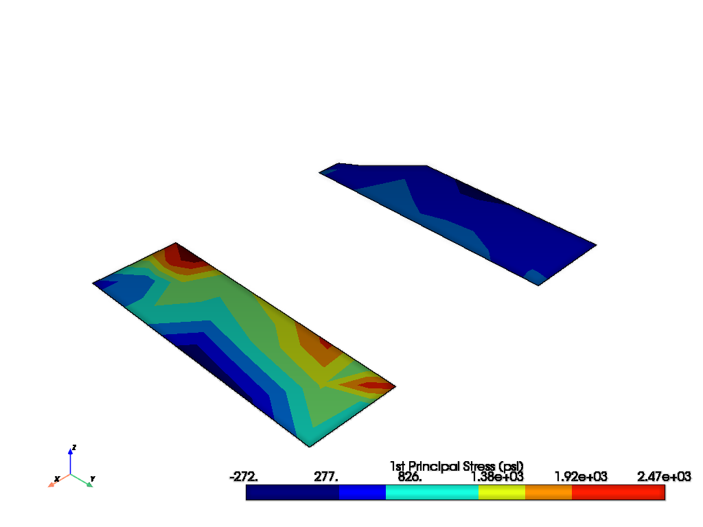
Generate a plot with three slice planes.
slices = grid.slice_orthogonal()
slices.plot(
scalars="p1",
background="white",
lighting=False,
eye_dome_lighting=True,
show_edges=False,
cmap="jet",
n_colors=9,
scalar_bar_args=sbar_kwargs,
)
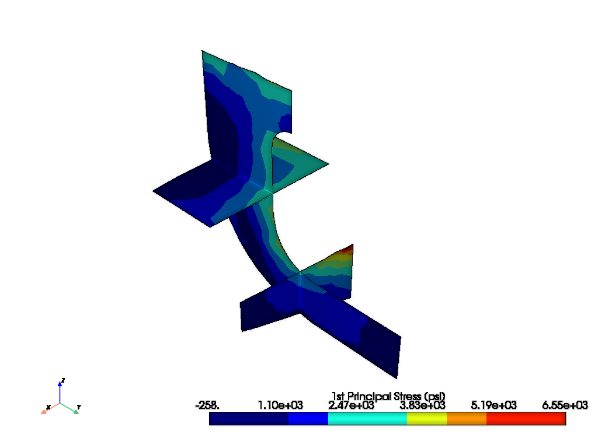
Generate a grid with multiple slices in the same plane.
slices = grid.slice_along_axis(12, "x")
slices.plot(
scalars="p1",
background="white",
show_edges=False,
lighting=False,
eye_dome_lighting=True,
cmap="jet",
n_colors=9,
scalar_bar_args=sbar_kwargs,
)
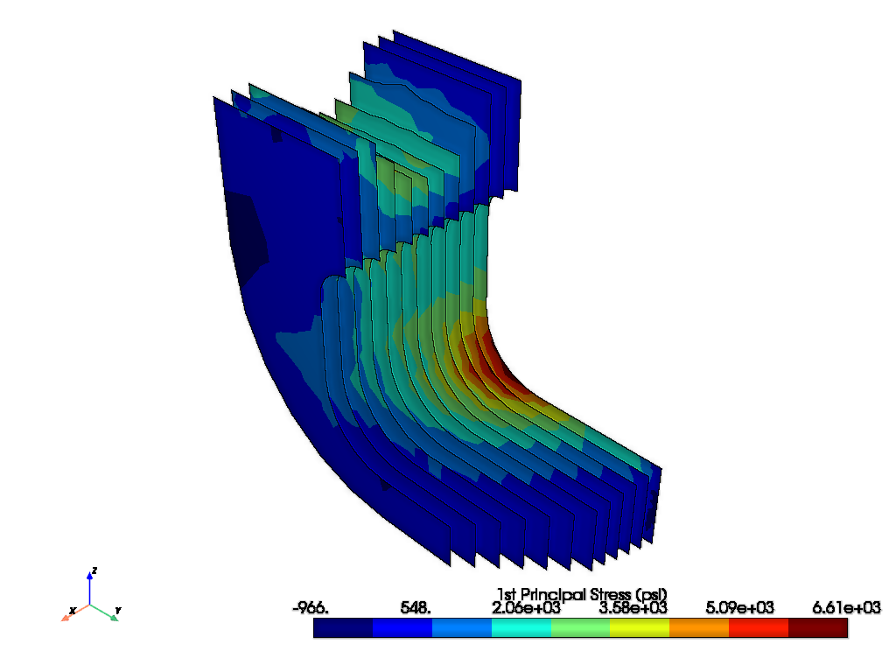
Finally, exit MAPDL.
mapdl.exit()
Total running time of the script: (1 minutes 5.119 seconds)